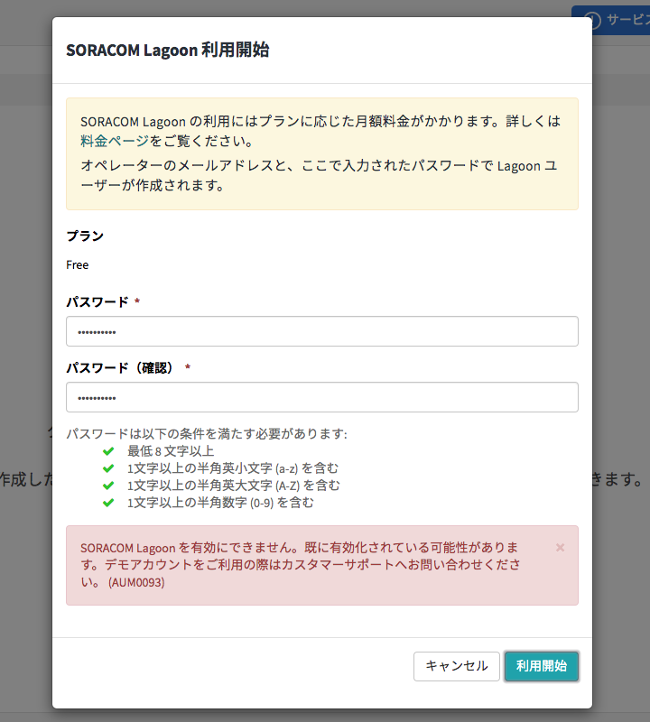
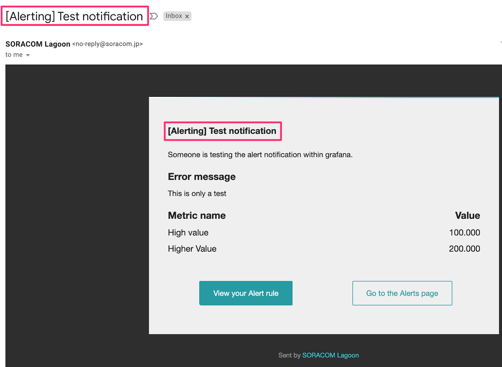

必要な機材
- GPS マルチユニット SORACOM Edition（バッテリー内蔵タイプ）
- SORACOM の LTE-M 通信に対応した特定地域向け IoT SIM（plan-D/plan-KM1、nano サイズ）
- PC（最新のGoogle Chromeインストール済み）
※GPS マルチユニット SORACOM Edition（バッテリー内蔵タイプ）スターターキットは plan-D nano サイズとセットで販売しております
前提
- SORACOM のアカウントを作成済みであること
構成図
GPS マルチユニット SORACOM Edition(以降、GPS マルチユニット)に SIM をセットします。
SIM のセットは、電源オフの状態でおこないます。 電源の状態を確認するため、ファンクションボタンを1秒押してください。LEDが点灯すれば電源が入っています。
また電源をオフにするには、ファンクションボタンを約 4 秒押してください。電源オフの後、以下のように LED が点灯します。
nanoSIM サイズの SIM カードをカードトレイに取り付け、カードスロットに挿入してください。
カードトレイの取り出し
※奥へカードトレイを押し込んでも出てきませんので、爪等に端をかけて取り出してください。
カードスロットへの挿入
※カードトレイの形に合わせて SIM を置きます。チップ（金色の面）は上向きです。
次に、ユーザーコンソールからデバイス設定を行い、送信データ、送信先の設定を行います。
ユーザーコンソールのGPSマルチユニットメニュー（コンソール左上 Menu → ガジェット管理 → GPS マルチユニット）をクリックします。
以下のように GPS マルチユニット画面が表示されます。
以下のように GPS マルチユニット画面が表示されます。
次に、「新規デバイス設定」をクリックします。
「ステップ 1: GPS マルチユニットに SIM をセットする」でGPS マルチユニットにセットしたSIMを選択します。
「次へ：グループを選択」をクリックします。
GPS マルチユニットの設定は SIM グループに保存されます。 SIM グループは後から変更ができます。同じ SIM グループ内にある SIM は同じ設定を共有します。
ここでは、「新規グループを作成」を選択し、グループ名に「GPS マルチユニット」を入力します。グループに入れておくと、グループ単位で同じ設定を簡単に反映することが可能になります。
「次へ：設定を編集」をクリックし、送信内容を設定します。
本ハンズオンでは、温度、湿度、バッテリー残量のデータを1分置きにSORACOM Harvest Dataに送信します。Harvest Data を利用いただくと、外部のサーバーやクラウドサービスを用意しなくても SORACOM プラットフォーム内で簡単に可視化することができます。送信内容と送信先を以下のように設定します。
送信モードは全部で 3 つあります。
- 定期送信 - 自動モード：GPS マルチユニットの移動状態に応じて、データを定期的に送信する頻度が自動的に調整されます。モードのしきい値や定期送信頻度を調整することはできません。
- 定期送信 - 手動モード：送信間隔や送信する期間、曜日や時間帯を設定することができます。
- 定期送信 - なし：定期的にデータを送信せず、ボタンを押した時にのみデータを送ることができます。
当ガイドでは、定期送信 - 手動モード設定を以下のように設定します。
以下のように設定します
- 送信間隔：最小 1 分から、最大 24 時間で設定可能です
- 期間：データを送信する期間を設定可能です
- 曜日：平日の営業時間だけデータを送信する、等用途に合わせて設定可能です
- 時刻：デフォルトでは常に送信するが選ばれていますが、用途に応じて特定の時刻を設定可能です
当ガイドでは、加速度割り込みは設定せず「保存」をクリックし、デバイス画面に戻ります。
設定は完了しましたが、設定を機器に反映させる必要があります。機器の設定を変えた後には必ず、SIM を挿入して電源を入った状態でファンクションボタンを 1 回押してください。電源が入っているかどうかは、ファンクションボタンを押しLEDが点灯するかを確認してください。LEDが点灯したら電源が入っています。
GPS マルチユニットのセンサーデータを送信します。
ファンクションボタンを短押し(約 1 秒間)すると、定期送信の設定に関わらず、センサーデータ(電波強度・温度・湿 度・電池残量)をクラウドサーバに送信します。
設定したGPS マルチユニットデバイスを選択し、「データを確認」ボタンをクリックします。
右上の自動更新（5秒）をオンに設定することで、自動的に新しいデータが表示されます。
示すデータは、以下の通りです。
- bat: 電池残量（3 段階）
- rs: 電波の強さ（4 段階）
- temp: temperature、温度（℃）
- humi: humidity、湿度（%RH）
- type: 定期送信か、ボタンを押した時の送信かを示す
また、GPS をオンにしていた場合は下記の項目が表示されます。
- lat：latitude、緯度
- lon: longitude、経度
詳細はこちらのページより、「GPS マルチユニットから送信されるペイロード」をご覧ください。
今回設定した温度・湿度のデータだけを表示するため右上のtemp, humi以外のチェックを外します。
また、左側の自動で調整ボタンのチェックを外すことで、グラフの最大値と最小値を手動で設定できます。
ここでは、送信したデータを SORACOM Lagoon を使って可視化します。
SORACOMのユーザーコンソールにログインし、メニュー（コンソール左上 Menu）→「データ収集・蓄積・可視化」→「SORACOM Lagoon」メニューをクリックします。

Lagoon を有効化する
「SORACOM Lagoonの利用を開始する」ボタンをクリックします。
パスワードを設定します。
このパスワードはSORACOM コンソールのアカウントのメールアドレスで Lagoon へログインする時に必要なパスワードとなります。
※ SAM アカウントを設定している方は SORACOM Lagoon を有効化することができません。ルートアカウント（メールアドレスでログインする方法）でログインし、有効化してください。
SORACOM Lagoon は、Free、Maker、Pro の 3 種類のプランがあります。プランによって、作成できるダッシュボード/アラート数や、編集/読み取りユーザーが異なります。今回は、無料プランの Free プランを利用します。
パスワードを設定し、利用開始をクリックします。
このパスワードはSORACOM アカウントのメールアドレスでLagoonへログインする時に必要なパスワードとなります。
利用開始ボタンクリック後に、以下のエラーが出た場合には、カスタマーサポートへお問い合わせ下さい。お問い合わせの手順はこちらから。
*デモアカウントとは？SORACOM Lagoon サンプルダッシュボードご利用申請をいただいた方が該当します。

Lagoon へログインする
Lagoon へログインしダッシュボード設定を行います。
「SORACOM Lagoon にアクセス」ボタンをクリックします。
オペレータアカウントのメールアドレスと先ほど設定したパスワードを入力しログインします以上でLagoon の利用を開始しログインできました。
SORACOM Lagoon を使いダッシュボードを作成し、センシングデータを可視化するダッシュボードを作成していきます。
最初に左上の十字ボタンから「ダッシュボード」をクリックします。
New dashboardという名前でダッシュボードが作成されパネルの選択画面が表示されます。
今回はグラフを選択します。
空のグラフパネルが作成されました。
パネル上部の「Panel Title」をクリックし、プルダウンから「編集」を選択します。
「メトリック」タブに、GPS マルチユニット SORACOM Edition に設定したSORACOM Air 回線の情報を設定します。SIM に名前をつけた場合は、選択の際に名前が表示されます。
回線を選択すると、上部のグラフにデータが表示されます。
デフォルト設定では、過去6時間のデータが表示されます。直近のデータが表示されるよう、右上の「Last 6 hours」と書かれている箇所をクリックし、過去5分間、自動更新を1分に変更します。
グラフが下記のように表示されます。
本ハンズオンでは、温湿度データをグラフに表示するため、下記の通り「temp」と「humi」をメトリック内に追加します。先ほど設定したSIMの横のプルダウンをクリックし、設定します。
新しく「クエリを追加」をクリックし、同じように、GPS マルチユニット SORACOM Edition に設定したSORACOM Air 回線の情報を設定します。また、メトリック内に「humi」も追加します。
温度と湿度の軸をそれぞれ設定します。
メトリックの横の「軸」をクリックし、左Y軸・右Y軸を下記のようにそれぞれの軸の最小値と最大値、軸の名前を設定します。
左Y軸
最小：0、最大：40、ラベル：温度
右Y軸
最小：０、最大：100、ラベル：湿度データを見やすくするため、湿度データを右Y軸に寄せます。
「表示」タブをクリックし「系列のオーバーライド」を選択し「+オーバーライドの追加」をクリックします。
下記のように「エイリアスもしくは正規表現」に「humi」を入れ、プラス記号を押して「Y-axisの2」を選択します。
左側に湿度の軸が設定されました。
湿度のグラフを水色に変更します。先ほど設定した「Y-axis」の横のプラスボタンをクリックし、Color＞changeを選択します。
カラーパレットが表示されるので、好きな色を選択します。ここでは水色を選択しました。
グラフに選択した色がつきます。
全般タブで、本グラフの名前を編集します。ここでは「GPSマルチユニット温湿度データ」としました。
右上の矢印をクリックし、ダッシュボードの画面へ戻ります。
右上の保存ボタンから、「ダッシュボードを保存」をクリックします。
名前をつけて「保存」をクリックします。
SORACOM Lagoon には、取得したデータの監視を行うアラート機能があります。設定した閾値等のルールに従ってEmail、Slack、Webhook 等へ通知を飛ばすことができます。
ここででは、アラート機能を利用し、設定した閾値を超えた場合にメールに通知を飛ばす仕組みを構築します。
左上の ベルアイコンをクリックし新しい「通知チャンネル」をクリックします。
アラート設定画面が表示されますので「+ New Channel」から通知チャンネルの新規追加を行います。
以下の値を入力します。
名前: 任意の名前 (例: GPS マルチユニット アラート)
タイプ: Email
すべてのアラートで送信: チェックを外す
Email addreses: ご自分のメールアドレス
送信テストをクリックし、宛先が正しいか確認します。しばらくすると以下のような [Alerting] Test Notifications メールが届けば、送信テスト成功です。

グラフへのアラート設定
先ほど作成したグラフ (例に従って設定した場合「GPS マルチユニット」) のタイトル部分をクリックし、[編集] を選択した後、アラートタブから「アラートを作成」ボタンをクリックします。
アラート設定として以下の値を入力します。
過去 1 分間の温度が 27 度を下回った場合にアラートを通知する設定となります。
WHEN: avg()
OF: query (A, 1m, now)
IS ABOVE: 27（この時は27に設定しました。ハンズオンでは、現在の温度に1-2度加えた数字にするとアラートが飛びやすくなります。数字は、参加者の環境に合わせて設定いただけます。）
通知の設定で送り先の + アイコンをクリックします。
先ほど設定したアラートの送り先を指定し、アラートメールのメッセージを記載します。ここでは、「温度が27度を超えました」としています。
ダッシュボードを保存をクリックします。
赤色の線が、条件として設定した27度のラインになります。
GPS マルチユニットの温度を上げてみます。1分以内に27度を超えたタイミングで、先ほど設定したメールアドレスに下記のような通知メールが届きます。

アラートメール送信のタイミングがグラフに ▲ で表示されます。
マウスカーソルを合わせると日時や値を確認できます。
アラートの履歴は、状態履歴から確認できます。
以上で、GPS マルチユニット SORACOM Edition のハンズオンは終了です。
本コンテンツでは費用がかかるサービスを利用しています。
本項をよく読み、必要な操作や解除作業を行うようにして、想定外の費用が掛からないようにしてください。
費用について（確認）
ここで記載している金額は全て税別、送料別となります。
SORACOM プラットフォームの利用料金
サービス／機能 | 料金 |
基本料: 10円/日 通信料: 0.2円~/MB (今回の利用であれば 1MB 以内で収まる範囲) | |
本機能を有効にしたグループに所属する1SIMあたり5円/日 (2000リクエスト/日/SIMを含む) 2000リクエスト/日を超えた分は0.004円/リクエスト | |
本レシピでは Free プラン(無料)を使用しました。その他の有料プランで出来るようになること等は SORACOM Lagoon 利用料金のページをご覧ください。 |
※ 費用詳細はリンク先をご確認ください。
GPS マルチユニットのデータ通信料の目安については GPS マルチユニット SORACOM Edition: よくある質問 をご覧ください。
GPS マルチユニットを電源 OFF にする（必須）
ハンズオンで利用した GPS マルチユニットは、現在1分に一回データを送る設定になっており、電源を OFF にするまで送信しつづけます（即ち、データ通信料が発生します）
GPS マルチユニットの電源を OFF にするを参照して、必ず OFF にしてください。
グループ解除（必須）
SORACOM Harvest Data 等、「機能が有効になっているグループに所属している SIM × 費用」となっているサービスにおいては、「機能を OFF にする」することで費用の発生を抑えることができます。またもう1つの方法として「グループに所属している SIM の数を減らす(= 解除する)」事でも費用を抑える事ができます。
グループ解除の方法はグループからの解除 (JP)をご覧ください。
SORACOM Harvest Data のデータ削除（任意）
SORACOM Harvest Data は基本的にはデータ保管料は無料※です。そのため、保存しておいても害はありませんが、デモ等で利用する際にはデータを綺麗にしておく必要が出てくるため、データ削除について解説します。
※発生から40日を超えたデータは削除されます。40日以上データを保管したい場合はデータ保持期間延長オプション利用料金をご利用ください。
SORACOM Harvest Data 画面 (［操作］>［データを確認］) のデータテーブルで、削除したいデータのチェックボックスを付けた後に［削除］をクリックします。表示されたダイアログで改めて［削除］をクリックすると、削除されます。
※ 複数のデータにチェックをつければ一括で削除可能です。

データの復元はできませんのでご注意ください。
SORACOM Lagoon の解約（任意）
SORACOM Lagoon はオンラインで解約が可能です。 Free プランであれば有効化しておいても費用は発生しませんが、長期に渡って利用しない場合には解約も選択いただけます。
解約の方法はSORACOM Lagoon の解約(JP)をご覧ください。
本コンテンツについて（確認）
本コンテンツは無償で公開しています。URL が必要な方はブックマークなど行うようにしてください。事前の断りなく公開中止やURL 変更される場合があります。
著作権は株式会社ソラコムに帰属しています。再利用を希望される場合はご連絡ください。
SORACOM Lagoon アカウントがMaker、Pro プランの方のみご利用いただけます。
本内容は、SORACOM Lagoonで作成したダッシュボードを、第三者に共有する方法をご紹介します。
まず、SORACOM Lagoonにログインし、共有したいダッシュボードを開きます。
右上の「ダッシュボードを共有」ボタンをクリックし共有リンクのURLを取得します。
SORACOM Lagoonのコンソール画面に戻りダッシュボードユーザーを作成します。「+ユーザー追加」ボタンからLagoon ユーザーの権限、メールアドレス、パスワードを設定します。ユーザー権限は下記2種類あります。どちらを選んでいただいても構いません。
- 読み取り専用：ダッシュボードの閲覧が可能なユーザーです。
- 編集可能：ダッシュボードの閲覧と編集が可能なユーザーです。
先ほど手に入れたリンクのURLへアクセスすると再びログイン画面が表示されます。
※同じブラウザで実施するとログイン状態が保持されている場合があるのでキャッシュのクリアまたは別のブラウザにてお試しください。
追加したLagoon ユーザーのメールアドレスとパスワードを入力すると、GPS マルチユニットの温湿度データを表示したダッシュボードを確認できます。
以上でLagoon でダッシュボードの作成、共有は終了です。